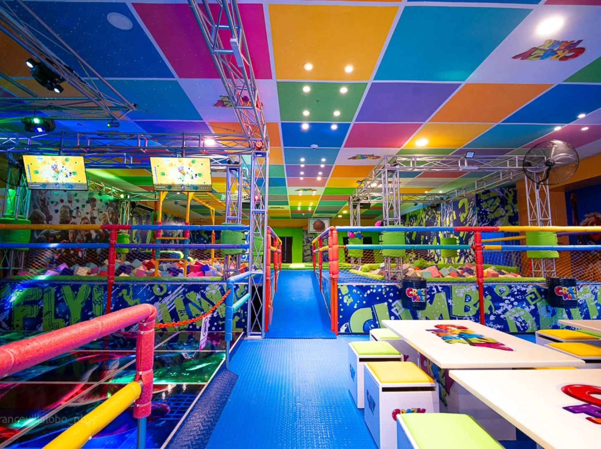

CRAZYPARK.
DISEÑAR
PARA JUGAR.
Del archivo gráfico a un entorno para recorrer: identidad, superficies de gran escala y sectores que construyen una experiencia visual propia.
EXPLORAR PROYECTO
01 / IDENTIDAD VISUAL
LA MARCA
EN MOVIMIENTO.
Dos composiciones de los recursos visuales del proyecto. Su tratamiento tridimensional, volumen y color se conservan tal como aparecen en los archivos originales.
Se presentan como archivos del proyecto; esta selección no implica autoría sobre el diseño original del logotipo.
02 / DEL ARCHIVO AL ESPACIO
EL COLOR
SE CONSTRUYE.
La gráfica para techo utiliza un patrón modular de bloques cromáticos. La documentación del parque permite verla aplicada en una superficie de gran escala.
Comparación entre archivo gráfico y fotografía del resultado. Son encuadres distintos; no es un «antes/después» fotográfico.
02.B / IDENTIFICACIÓN DE SECTORES
UNA MARCA.
DISTINTOS MUNDOS.
La señalética gráfica convive con la intensidad de luces, juegos y estructuras. Cada sector tiene un lenguaje propio, pero forma parte de la misma experiencia.
03 / EXPERIENCIA DEL LUGAR
EL DISEÑO
SE RECORRE.
Las aplicaciones cambian con la escala, las actividades y la iluminación. Estas fotografías muestran el trabajo en relación directa con el entorno construido.
04 / EXPERIENCIA COMPLEMENTARIA
CRAZY SPA.
OTRA ATMÓSFERA.
Dentro del conjunto de ambientes registrados, este sector propone una estética diferente. Su acceso y su interior muestran cómo cambia el lenguaje gráfico según la experiencia.
Las fotografías fueron aportadas por el cliente. Se conservan los créditos o marcas de agua originales, cuando están presentes. La inclusión no atribuye autoría de fotografía ni de arquitectura.
CRAZY PARK / GRÁFICA APLICADA A ESPACIOS
DEL DISEÑO
A LA EXPERIENCIA.
Un recorrido donde el diseño gráfico se integra al mundo real: muros, techos, accesos y nuevas formas de comunicar una marca.
EXPLORAR MÁS PROYECTOS VER TAMBIÉN JUMMPARK →